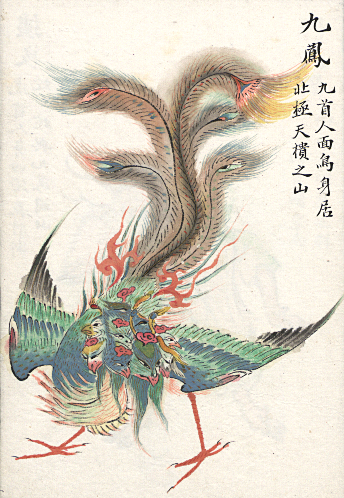

山海经 / Classic of Mountains and Seas

The Classic of Mountains and Seas(Chinese: 山海经), also known as Shan Hai Jing, formerly romanized as the Shan-hai Ching, is a Chinese classic text and a compilation of mythic geography and beasts. Versions of the text may have existed since as early as the 4th century BC, but the present form was not reached until the early Han dynasty a few centuries later.[6] It is largely a fabulous geographical and cultural account of pre-Qin China as well as a collection of Chinese mythology.[citation needed] The book is divided into eighteen sections; it describes over 550 mountains and 300 channels.
Introduction vedio from「Culture Clicky」
Contents
The Classic of Mountains and Rivers has 18 chapters (巻). Chapter 4 has 12 subsections (次一), 2 and 4 have four, and chapters 1 and 3 have three.
- 南山經 Nánshān Jīng Classic of the Mountains: South
- 西山經 Xīshān Jīng Classic of the Mountains: West
- 北山經 Běishān Jīng Classic of the Mountains: North
- 東山經 Dōngshān Jīng Classic of the Mountains: East
- 中山經 Zhōngshān Jīng Classic of the Mountains: Central
- 海外南經 Hǎiwàinán Jīng Classic of Regions Beyond the Seas: South
- 海外西經 Hǎiwàixī Jīng Classic of Regions Beyond the Seas: West
- 海外北經 Hǎiwàiběi Jīng Classic of Regions Beyond the Seas: North
- 海外東經 Hǎiwàidōng Jīng Classic of Regions Beyond the Seas: East
- 海內南經 Hǎinèinán Jīng Classic of Regions Within the Seas: South
- 海內西經 Hǎinèixī Jīng Classic of Regions Within the Seas: West
- 海內北經 Hǎinèiběi Jīng Classic of Regions Within the Seas: North
- 海內東經 Hǎinèidōng Jīng Classic of Regions Within the Seas: East
- 大荒東經 Dàhuāngdōng Jīng Classic of the Great Wilderness: East
- 大荒南經 Dàhuāngnán Jīng Classic of the Great Wilderness: South
- 大荒西經 Dàhuāngxī Jīng Classic of the Great Wilderness: West
- 大荒北經 Dàhuāngběi Jīng Classic of the Great Wilderness: North
- 海內經 Hǎinèi Jīng Classic of Regions Within the Seas